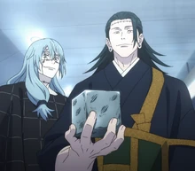

Pandemonium
Mechamaru reports that Satoru Gojo has been sealed. Back at the station, Geto's body temporarily takes control over the imposter's right hand, prompting a brief discussion on the connection of the body and soul with Mahito. Pseudo-Geto commands the Prison Realm to close and with that, Satoru Gojo is sealed.
Mechamaru confirms that he was killed by the patch face curse, clarifying that Yuji is only talking with a contingency he had created beforehand. As curse users head to the Mei Mei Team's location, Itadori is tasked with informing everyone on Gojo's status. Knowing that the fate of the jujutsu world is at stake, Yuji heads out. In the meantime, the Prison Realm is brought down to the floor as Satoru puts his faith in everyone.[13]
